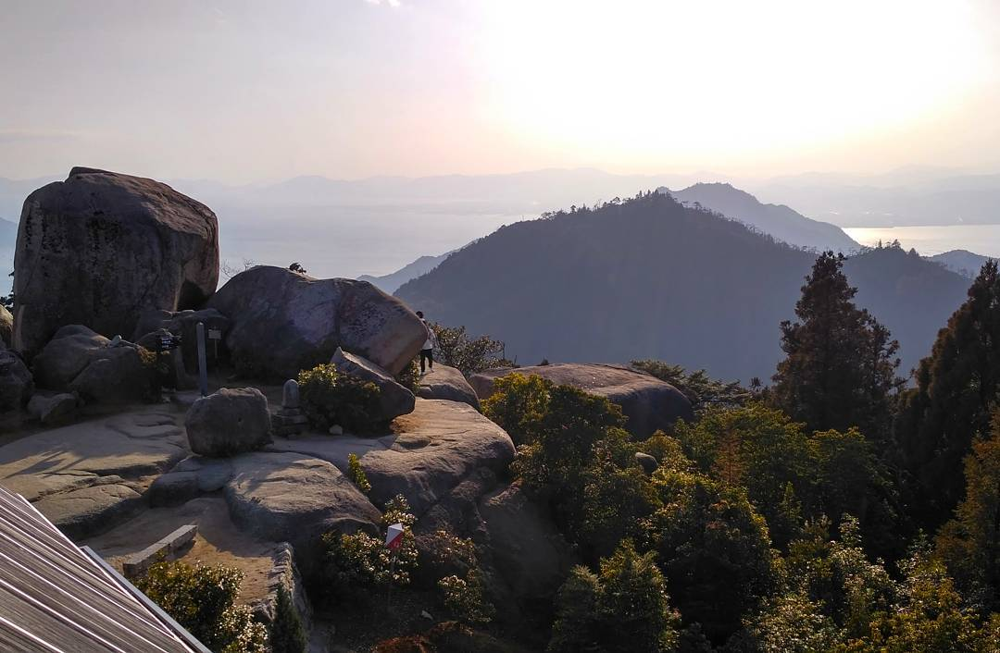

Senior engineer, team and technical leader with 8+ years experience in computer vision, robotics, machine learning and software engineering.
I have experience in working at multiple different environments from early-stage startup through mid-size company, goverment institute to multinational corporate job. My current interest are self-driving cars, smart robots and the software that is on them. I'm also interested in fintech and tech startups in general. Recently, I've been gaining experience in project and people management. I am currently working on self-driving car as a Sr. Engineering Lead which is a hybrid Engineering Manager and Technical Program Manager position in our organization.
I love clean code, solid architecture, comprehensive documentation (maybe a bit too much). I've been and I am working in many different areas including writing code, people management, working on tech roadmaps and project delivery, hooking up automation tools, hacking together simple embedded systems, presenting at conferences, field testing, negotiating with business partners or just manage projects on Jira. My strongest suit is possibly the fact that I can get shit done. I am currently managing a team of about 15 engineers and lead a project that spans across 40+ people (the majority of our company).
I am always trying to bring cheer and fun to my teams, I am quite a bit of joker and very laid back while also not afraid of hard work. Outside of automation and AI, I am also quite interested in space exploration and fintech.
I am leading the self-driving engineering and R&D at Ascent Robotics, being involved both in the technical and the operations/management side of the organization. I am acting both as an Engineering Manager for a large team and as a Technical Program Manager leading our self-driving vehicle and simulation development. My current and past roles at Ascent covers a range of robotics and software development tasks, including: SW architecture design, helping out ML research, robotics software development, systems engineering, self-driving operation management, field testing, code reviewing, roadmap planning, technical hiring, budgeting and product development.
I was leading the broader self-driving engineering teams at Ascent Robotics while the organization was growing after our Series A investment. I was invovled with the vehicle robotics and perception team, infrastructure team and software tools team. Before restructuring, I was leading 30+ people in a constantly evolving environment and served as an interim CTO for a while. During this period, I started to learn and be involved with leadership and management while still actively working on engineering tasks.
I was leading a team of 5-7 engineers, developing the core framework of our deep learning and robotics platform. I was working on various self-driving engineering tasks including HW and SW architecture design, software engineering, technical hiring and project management. Additional to this, I was also working on financial intelligence projects.
I joined Ascent Robotics as the company's 2nd engineer. I am actively participating in shaping the company ever since them, both on the code/architecture and on the organizational level. My initial tasks involved computer vision and software prototype development, architecture design and tech pitch to investors and potential partners.
I worked on the then next-generation RoboTaxi, ZMP's self driving platfrom. I mostly worked on computer vision and robotic system software development. I also participated in systems setup, sensor calibation and testing the self-driving car both on the test track and in traffic.
I developed vision software front-end (Cognex VisionView, Cognex Designer), mostly in C#, TypeScript and JavaScript. I was responsible for HMI framework design and implementation, script parsing, object serialization-deserialization and automatic code generation.
I joined as an intern and stayed at the Academy as a contractor Research Engineer. I was part of the Machine Perception Research Laboratory research group and worked on 2D and 3D computer vision, image processing and 3D object recognition and registration in Point Clouds. Most of my work was related to object detection, segmentation and scene understanding in lidar point clouds.
Remote studies. I dropped out because of my demanding startup work.
I took a vide array of classes including Electrical and Mechanical Engineering classes to explore my interests. I also won two scholarships (see below).
I won an EU scholarship (STARS - Sensing Technology and Robotics Scholarship) to spend a year in the US. During the year I was able to complete all Florida Tech courses that were disjunct from my program and gradudated both at Florida Tech and my home institute.
I was awarded an opportunity to take courses at Gabor Bojar's private college. I took courses in computer vision, computational biology, enterpreneurship and UX
When not working, I enjoy traveling, taking photos of random things, exploring the city, trying new food places or riding my motorbike. I try to visit at least 5-6 countries each year.
My technical interests outside of work are space exploration, airplanes, cars and motorbikes. I've been experimenting with home automation a bit and planning to learn some mechanical knowledge as soon as I find a place that allows me to tinker on vehicles.
